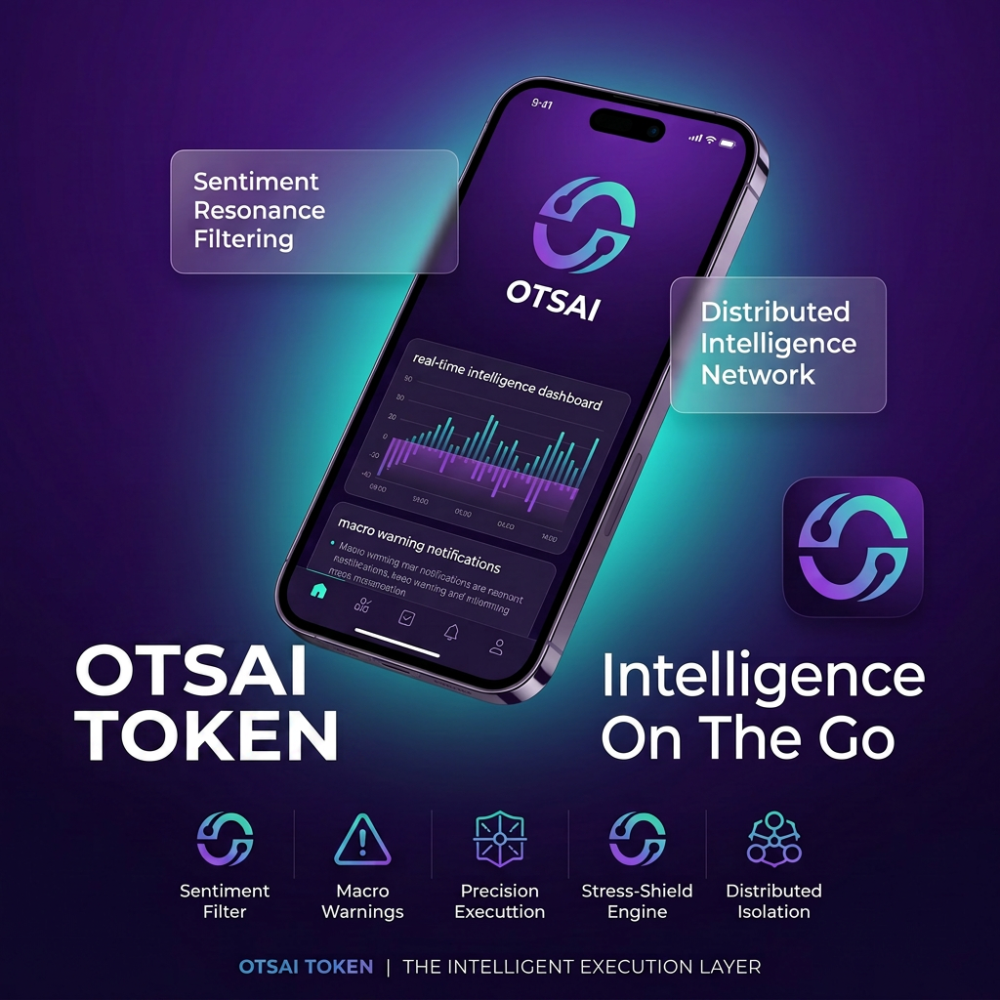
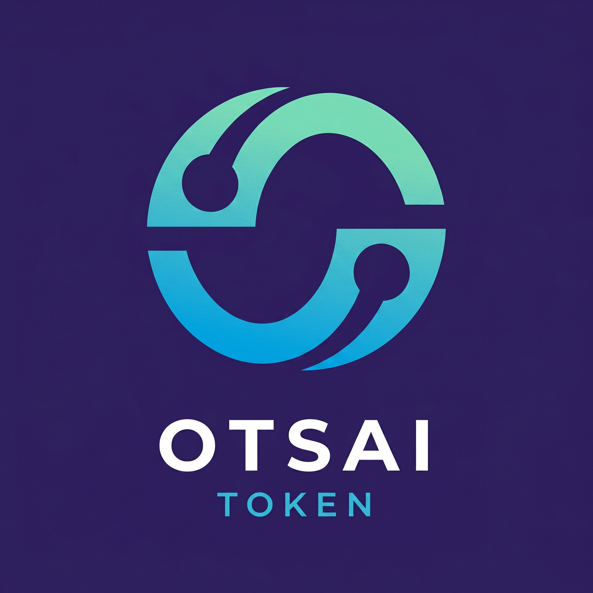

AI
AI Macro Intelligence
Visitors may contact OTSAI Token to ask about the AI macro intelligence concept, signal clarity, broad market interpretation, and the role of structured information layers in digital environments.
The OTSAI Token contact page provides a clear and accessible communication path for visitors, researchers, readers, and partners who want to learn more about the OTSAI Token intelligence narrative, Insights blog system, AI macro intelligence direction, and digital execution context.
OTSAI Token uses official clickable contact links so visitors can open the correct channel without manually copying information. The address, X profile, Facebook profile, and support email are displayed clearly and repeated in the footer for a consistent website experience.
Address: 100 Pine St, San Francisco, CALIFORNIA, 94111 X / Twitter: https://x.com/OsterhausNEWS Facebook: https://www.facebook.com/profile.php?id=61590265544709 Email: support@osoqllc.comThis lightweight GitHub Pages contact form is designed for front-end use only. It does not require a backend. When submitted, it gives visitors a clear prompt to send their OTSAI Token inquiry directly to the official support email.

The Contact page completes the OTSAI Token website structure by giving visitors a final destination after reading the Home page, About page, Insights blog articles, and FAQ section. The content is written in the same premium corporate style as the rest of the site, and the page keeps the same bright technology visual language.
OTSAI Token presents itself as an intelligence-focused brand, so the contact experience should feel organized and trustworthy. Visitors can quickly find the official address, open social links in new tabs, or launch an email message through the clickable support link.
OTSAI Token includes clickable X and Facebook links that open in a new browser tab with secure external-link settings.
OTSAI Token uses a clickable mailto link for support@osoqllc.com so visitors can directly prepare an email from their device.
OTSAI Token displays 100 Pine St, San Francisco, CALIFORNIA, 94111 with a clickable map search link for convenient navigation.
This section gives the Contact page more depth and helps visitors understand which topics are most relevant to the OTSAI Token website, brand system, and Insights library.
Visitors may contact OTSAI Token to ask about the AI macro intelligence concept, signal clarity, broad market interpretation, and the role of structured information layers in digital environments.
Visitors may contact OTSAI Token to discuss the NLP technology narrative, financial language understanding, semantic signals, and how market language can become a structured intelligence input.
Visitors may contact OTSAI Token about sentiment resonance filtering, emotional market language, attention cycles, narrative durability, and the difference between temporary noise and meaningful signal.
Visitors may contact OTSAI Token about execution systems, scenario awareness, macro-aligned interpretation, risk review, and the connection between intelligence layers and disciplined action.
OTSAI Token uses the logomark across navigation, favicon, footer, and visual sections. This makes the contact page feel connected to the rest of the site rather than a separate or unfinished page. The bright cyan symbol, premium rounded panels, and luminous interface details all reinforce the same brand identity.
The Contact page also supports the website’s GitHub Pages structure. It uses only HTML, CSS, and JavaScript, which means it can be deployed without backend configuration while still offering clickable contact paths.

After contacting OTSAI Token, visitors can continue reading the full website through the Home, About, Insights, and FAQ pages. The same UI system is maintained across all pages to keep the experience polished and consistent.